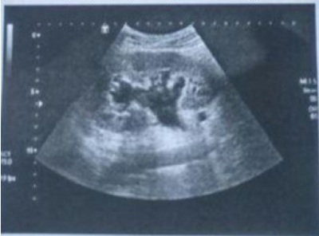

Questão 1 · Fatores de risco e de proteção · 4000128424Inúmeros fatores podem in uenciar no aumento da exposição ao endométrio proveniente do re uxo tubário na, pelve e, assim, aumentar a probabilidade de desenvolvimento da endometriose. Nesse sentido, estão corretas as assertivas abaixo, EXCETO:
A Idade da menarca.
B Multiparidade.
C Aumento do fluxo menstrual.
D Amamentação insuficiente.
E Primeira gravidez tardia.
Questão 2 · Quadro clínico · Def inição · Tratamento · 4000128122Mulher, 34 anos de idade, nuligesta, casada, tenta engravidar há 1 ano e 6 meses sem sucesso. Nega comorbidades. Refere ciclos menstruais regulares, durando 5 dias com uxo normal, porém com dismenorreia leve. Também queixa de dispareunia de profundidade. Nega outros sintomas. Ao exame especular, conteúdo vaginal siológico e colo sem alterações. Ao toque vaginal, útero em anteroverso exão, de volume normal, desconforto à mobilização do colo. Ausência de dor à palpação de anexos. Sobre endometriose em geral, é correto afirmar:
A Caracteriza-se pela presença de tecido endometrial fora da cavidade uterina e, portanto, está associada ao fluxo menstrual intenso.
B Tem baixa taxa de recorrência após tratamento cirúrgico e hormonal.
C É uma causa relevante de obstrução tubária e de infertilidade.
D O exame especular costuma evidenciar nódulos em região retrouterina, principalmente se há dispareunia.
Questão 3 · Quadro clínico · Exames complementares · Tratamento · 4000128121Mulher, 34 anos de idade, nuligesta, casada, tenta engravidar há 1 ano e 6 meses sem sucesso. Nega comorbidades. Refere ciclos menstruais regulares, durando 5 dias com uxo normal, porém com dismenorreia leve. Também queixa de dispareunia de profundidade. Nega outros sintomas. Ao exame especular, conteúdo vaginal siológico e colo sem alterações. Ao toque vaginal, útero em anteroverso exão, de volume normal, desconforto à mobilização do colo. Ausência de dor à palpação de anexos. Em ultrassonogra a transvaginal realizada pela paciente, foi visualizada formação tecidual hipoecóica alongada e irregular, envolvendo o ligamento uterossacro esquerdo medindo 2,0cm x 1,2cm x 0,6cm. Ovário esquerdo apresentando formação cística e arredondada de contornos regulares e conteúdo espesso, homogêneo, em vidro fosco de 1,5cm. Com base nesses achados, é correto o que se afirma em:
A O CA125 é um marcador tumoral específico para endometriose, tendo indicação de avaliação neste caso.
B Com tais achados ultrassonográficos, a paciente tem indicação de tratamento cirúrgico.
C A ultrassonografia transvaginal não é um exame eficaz na investigação inicial de infertilidade, sendo necessária a realização de ressonância pélvica para melhor elucidação dos achados.
D Os achados ultrassonográficos são compatíveis com endometriose e podem justificar a infertilidade, porém não há indicação para tratamento cirúrgico no momento.
Questão 4 · Quadro clínico · 4000124779Mulher, 27 anos, G0P0, é encaminhada ao serviço de ginecologia do HUAP com queixas de cólicas menstruais intensas que vem aumentando nos últimos dois anos, associada a dispareunia. Casada há cinco anos, nega uso de anticoncepcionais há três anos. Nega comorbidades, uso de medicamentos, cirurgias prévias e alergias. Apresenta ultrassonogra a transvaginal e preventivo dos últimos três meses, sem alterações. Sobre a principal hipótese diagnóstica, pode-se afirmar que:
A a cirurgia para lise de aderências e retirada de possível massa ovariana soluciona definitivamente os sintomas de dor e infertilidade.
B a dismenorreia acíclica intensa pode não responder aos anti-inflamatórios não esteroidais (AINES) e aos anticoncepcionais orais, correlacionando-se diretamente com afecções superficiais da doença.
C a dosagem de CA 125 tem boa sensibilidade em qualquer estágio da doença em questão.
D o exame físico da paciente pode apresentar útero fixo ou pouco móvel, dor a palpação de ligamento uterossacro e de septo retovaginal, justificando o sintoma dispareunia.
E análogos de GnRH estão indicados para pacientes que desejam gestar, devendo ser utilizados por um ano, pois seus efeitos colaterais são discretos. Análogos de GnRH estão indicados para pacientes que desejam gestar, e devem ser utilizados por 1 ano, pois seus efeitos colaterais são discretos.
Questão 5 · Tratamento cirúrgico · 4000124368A Sociedade Europeia de Reprodução Humana e Embriologia (ESHRE), a Sociedade Americana de Medicina Reprodutiva (ASRM) e a Federação Brasileira das Associações de Ginecologia e Obstetrícia (FEBRASGO) publicaram suas orientações e recomendações para o tratamento de mulheres com endometriose. O tratamento cirúrgico está indicado na seguinte situação:
A Presença de endometrioma bilateral.
B Falha terapêutica hormonal para aliviar a dor.
C Infertilidade associada à obstrução tubária.
D Correção de adenomiose difusa.
E Paciente assintomática para prevenir o aumento da doença.
Questão 6 · Ultrassonograf ia · 4000120614Uma paciente de 35 anos de idade, com ciclos menstruais regulares (duração de sete dias e intervalos de 28 dias), queixa-se de dismenorreia desde a menarca, porém com piora da dor há três anos. Refere dor nota 8, que se inicia três dias antes do uxo menstrual e melhora cerca de dois dias após o m do sangramento. Queixa-se, também, de dispareunia de profundidade há dois anos e, no período menstrual, vem apresentando obstipação intestinal e disquezia. Relata três episódios de hematoquezia, sempre no período menstrual. Considerando essa situação hipotética, o exame complementar mais indicado para a paciente será a
A colonoscopia.
B tomografia computadorizada de pelve.
C ultrassonografia transvaginal simples.
D ultrassonografia transvaginal com Doppler.
E ultrassonografia com preparo intestinal.
Questão 7 · Def inição · 4000120290Em paciente com dor pélvica crônica cujo diagnóstico clínico é de endometriose, espera-se encontrar, com maior frequência, focos de endometriose
A nas tubas uterinas.
B nos paramétrios laterais.
C no intestino delgado.
D nos ureteres.
E nos ligamentos uterossacros.
Questão 8 · Fatores de risco e de proteção · 4000114958Podem ser consideradas como fatores de risco para desenvolvimento de endometriose pélvica as situações incluídas na alternativa:
A Obesidade e multiparidade.
B Tabagismo e imunodepressão adquirida.
C Amenorreia secundária e hipogonadismo.
D Ter irmã com endometriose e menarca precoce.
Questão 9 · Tratamento clínico · 4000114815Em relação à endometriose pélvica, é correto afirmar que
A a terapêutica com anticoncepcionais hormonais combinados deve ser evitada poiscontém estrogênio.
B dosagens plasmáticas de CA-125 acima de 100 sugerem endometriose severa.
C sempre que há suspeita clínica de endometriose deve-se fazer uma videolaparoscopiadiagnóstica.
D progestagênios como levonorgestrel, gestrinona e dienogest podem ser usados notratamento clínico.
E o tempo máximo de tratamento com análogos do GnRH é de 18 meses.
Questão 10 · Fisiopatologia · 4000108937Diversas teorias tentam explicar a etiopatogenia da endometriose, já que células endometriais viáveis são encontradas na cavidade pélvica em mulheres sem a doença. Dentre essas teorias, pode-se citar que mulheres com endometriose devem ter:
A endométrio com redução da angiogênese.
B menor secreção de citocinas pelos macrófagos peritoneais.
C aumento de receptores de progesterona nos tecidos endometriais.
D diminuição da citotoxicidade das células Natural-Killer.
Questão 11 · Quadro clínico · 4000108214Paciente, 30 anos, história de infertilidade primária, tentando engravidar há 3 anos. Queixa-se de dor pélvica crônica, com dismenorreia progressiva. Tem ciclos regulares. Ao exame físico: útero com retroversão xa e doloroso à mobilização, e região de fórnice posterior com nódulos dolorosos. Tem uma histerossalpingogra a com laudo normal. Investigação masculina normal. Qual a hipótese diagnóstica e a conduta?
A Doença inflamatória pélvica; ultrassonografia transvaginal
B Endometriose; videolaparoscopia diagnóstica
C Doença inflamatória pélvica; videolaparoscopia
D Endometriose; ultrassonografia transvaginal com preparo intestinal
E Miomatose uterina; encaminhamento para reprodução assistida
Questão 12 · Fisiopatologia · 4000108172A endometriose é uma afecção ginecológica de alta prevalência. São características do endométrio de mulheres com essa afecção:
A produção de estrogênio.
B maior taxa de apoptose.
C incapacidade de produzir angiogênese.
D falta de expressão da aromatase.
E resistência à progesterona.
Questão 13 · Tratamento · 4000103696Endometriose é uma condição patológica do tecido que reveste o útero, que passa a crescer em locais extrauterinos, como nos ovários, por exemplo. As principais indicações de tratamento da endometriose são:
A Edema e dor abdominal
B Hemorragia e dor abdominal
C Dor abdominal e inchaço abdominal
D Dor pélvica crônica e infertilidade
Questão 14 · Exames complementares · 4000103330Frente à suspeita clínica de endometriose, o exame padrão ouro é:
A visualização das lesões pela videolaparoscopia.
B ultrassonografia transretal pós-preparo intestinal.
C videolaparoscopia com biópsia e confirmação histológica.
D ultrassonografia transvaginal pós-preparo intestinal.
Questão 15 · Tratamento do endometrioma de ovário · 4000100834Paciente de 23 anos, nuligesta, casada, usa preservativo como método contraceptivo, apresenta quadro de dismenorreia secundária e dispareunia profunda. Realizou ultrassonogra a transvaginal que mostrou cisto ovariano à direita sugestivo de endometrioma medindo 8,0 cm. A conduta terapêutica mais adequada é:
A Utilizar análogo do GnRh por 06 meses e após, manter uso de contraceptivo continuo.
B Utilizar contraceptivo oral continuo e controle ultrassonográfico semestral.
C Utilizar análogo de GnRh por 3 meses e posteriormente abordagem cirúrgica por videolaparoscopia.
D Submeter-se à punção do cisto guiada pela ultrassonografia e manter contraceptivo contínuo até o desejo de gestar.
E Orientação para gestar e iniciar indução da ovulação.
Questão 16 · Tratamento do endometrioma de ovário · 4000089283Paciente de 26 anos, nuligesta, assintomática, com diagnóstico de endometriose, possui lesão única de endometrioma = 2 cm. Nesse caso, a conduta mais adequada em relação ao cisto é:
A Aspirar.
B Coagular.
C Observar.
D Ressecar.
Questão 17 · Quadro clínico · Tratamento do endometrioma de ovário · Ultrassonograf ia · 4000084472Mulher de 28 anos procurou atendimento de urgência com quadro de dor abdominal em andar inferior, de forte intensidade. Relata que vem apresentando, há pelo menos seis meses, dor pélvica de intensidade gradativa. No exame ecográ co realizado de urgência, demonstrou a presença de formação cística com ecos internos difusos de baixa intensidade, distribuídos homogeneamente, medindo 6.0 cm, em topogra a anexial direita de provável origem ovariana. A hipótese diagnóstica provável é:
A cisto torcido
B cisto hemático
C teratoma imaturo
D endometrioma
Revisar: possível letra faltando em enunciado
Questão 18 · Outros exames diagnósticos · Exames complementares · 4000084094Mulher jovem tem diagnóstico de endometriose profunda ovariana e intestinal (ceco). O marcador tumoral frequentemente elevado nesse caso será:
A CEA
B CA 125
C CA 19-9
D alfa fetoproteína
Questão 19 · Endometriose · 4000084064Assinale a alternativa abaixo que NÃO tem relação com a endometriose.
A Infertilidade.
B Dismenorreia.
C Menarca precoce.
D Síndrome dos ovários policísticos.
Questão 20 · Tratamento do endometrioma de ovário · Tratamento da endometriose do trato urinário · 4000076563Paciente infértil de 31 anos, com diagnóstico de endometriose profunda com estenose de ureter, hidronefrose e endometrioma de 7cm, refere dor refratária ao tratamento clínico. A abordagem inicial deve ser:
A videolaparoscopia para exérese dos focos de endometriose
B videolaparoscopia para biópsia dos focos de endometriose
C fertilização in vitro com transferência a fresco de embrião
D inseminação intrauterina com preparo seminal
Questão 21 · Exames complementares · 4000076145Mulher branca, emagrecida, com quadro de dismenorreia progressiva, dispareunia, muita irritabilidade, baixa estima pela sua qualidade de vida. Relata uso de analgésicos fortes, quase todos os meses. Diante deste quadro clínico, pode-se afirmar que é necessário para o diagnóstico apropriado para esta paciente:
A o toque retal tem indicação absoluta, pois quase 90% da doença está no compartimento posterior da pelve
B o marcador tumoral Ca-125 tem alto poder diagnóstico, por sua alta sensibilidade e especificidade
C a tomografia computadorizada é de fundamental importância, com um padrão ouro de investigação deste quadro
D a laparoscopia deve ser indicada em todas as pacientes com este quadro, para investigação e complementação diagnóstica
Questão 22 · Quadro clínico · Exames complementares · Tratamento · 4000074376Em relação à endometriose, assinale a alternativa correta:
A O marcador Ca-125 é considerado como de eleição para firmar o diagnóstico deendometriose.
B O diagnóstico de certeza é obtido pela ressonância magnética, sendo consideradométodo padrão-ouro.
C O objetivo do tratamento é aliviar os sintomas, promover ou preservar a fertilidade emelhorar a qualidade de vida.
D Quanto maior for o estadiamento laparoscópico, mais importantes serão os sintomasda doença.
Questão 23 · Tratamento · 4000074206Uma mulher de 29 anos, chega a unidade básica de saúde com queixa de dor pélvica crônica, dismenorréia e dispareunia, apresenta ressonância magnética nuclear evidenciando alguns focos de endometriose em ligamento uterossacro. A paciente não deseja engravidar no momento, mas afirma querer retirar os focos cirurgicamente. Sua orientação nesse caso é
A Mesmo com a remoção dos focos de endometriose, a recorrência é comum após a excisão cirúrgica.
B A cirurgia é realmente a melhor opção, pois trata-se de tratamento definitivo.
C O tratamento cirúrgico seria indicado somente em caso de endometrioma.
D O tratamento clínico não atua no controle da dor.
Questão 24 · Tratamento clínico · 4000066023Dos fármacos abaixo qual NÃO é considerado uma opção de tratamento para endometriose?
A Danazol
B Análogo de GnRH
C Contraceptivo oral combinado contínuo
D Dispositivo intra-uterino com Levonogestrel
E Implante subcutâneo (""chip"") de testosterona
Questão 25 · Fatores de risco e de proteção · 4000062662Em relação à endometriose, considere as afirmativas a seguir. I. Durante a gravidez, as lesões da endometriose e os sintomas resultantes desaparecem ou melhoram. II. Endometriose torácica não pode ser identificada pela tomografia computadorizada, nem pela ressonância magnética. III. Fatores associados a um risco aumentado de endometriose incluem multiparidade, menarca tardia e menopausa precoce. IV. Fatores associados à diminuição do risco de endometriose incluem intervalos prolongados de amamentação. Assinale a alternativa correta.
A Somente as afirmativas I e II são corretas.
B Somente as afirmativas I e IV são corretas.
C Somente as afirmativas III e IV são corretas.
D Somente as afirmativas I, II e III são corretas.
E Somente as afirmativas II, III e IV são corretas.
Questão 26 · Quadro clínico · Patogênese · Fisiopatologia · 4000062308A endometriose é uma doença ginecológica definida pelo desenvolvimento e crescimento de estroma e glândulas endometriais fora da cavidade uterina. Pode-se afirmar que: I É mais frequente em mulheres jovens, que apresentam dismenorreia progressiva, infertilidade e dor pélvica crônica. II Existe uma única teoria que explica a patogênese da endometriose, a teoria da metaplasia celômica. III Podem ser encontrados sintomas relacionados a localizações atípicas do tecido endometrial: dor pleurítica, hemoptise, cefaleia e lesões em cicatrizes cirúrgicas. Assinale a alternativa correta:
A I e II são certas
B II e III são certas
C I e III são certas
D I, II e III são certas
Questão 27 · Classif icação · 4000047119Mulher de 30 anos de idade, G0 P0, instrutora de educação física, fumante de um maço de cigarros ao dia, chega ao ambulatório de ginecologia com quadro de dismenorreia progressiva há cinco anos associada à irregularidade menstrual. Tenta gestar por três anos sem sucesso. Já foi submetida à videolaparoscopia que evidenciou lesões endometrióticas disseminadas, de caráter recente no fundo de saco anterior. Sem endometriomas, cicatrizes ou aderências periovarianas. Também não foram observadas aderências peritubárias. Essa descrição é classificada, segundo ACOSTA, em
A mínima.
B leve.
C moderada.
D grave.
E gravíssima.
Questão 28 · Quadro clínico · Exames complementares · 4000046636A.M.D.A, 31 anos, casada, com tentativa de engravidar há 3 anos sem sucesso, não apresenta qualquer sintomatologia associada com endometriose. Realizou investigação básica para infertilidade, sem achados importantes, histerosalpingogra a normal, uxo menstrual com duração, quantidade e intervalos regulares. Ao exame físico, presença de nodulação endurecida em região retrouterina e fundo de saco, doloroso à palpação (ponto em gatilho), e útero com mobilidade reduzida. Em relação ao caso, qual exame solicitar para progredir na investigação do nódulo?
A Ressonância magnética da pelve
B Tomografia computadorizada do abdome total
C CA 125
D Colonoscopia
Questão 29 · Classif icação · Quadro clínico · Exames complementares · 4000045788Com relação a endometriose: I - O padrão-ouro para diagnóstico de endometriose é a associação da ultrassonografia e CA 125. II - Os análogos do GnRH devem ser considerados preferencialmente no tratamento empírico da endometriose em mulheres com sintomas e exame físico sugestivos já descartadas outras doenças relacionadas à dor pélvica, pois proporcionam mecanismo de feedback negativo na hipó se, gerando hipogonadismo hipo gonadotrópico que leva a amenorreia e anovulação, de onde se tem o seu efeito terapêutico. III - A endometriose profunda é profunda é definida como aquela que aprofunda além de 15 mm sob o peritônio e geralmente estão localizadas nos ligamentos redondos e colo uterino. Secundariamente podem atingir o fundo de saco de Douglas excepcionalmente intestino delgado e fígado. IV- Para o grupo de mulheres com endometriose e infertilidade, o tratamento hormonal com supressão da ovulação está indicado. V - Os endometriomas devem ser tratados cirurgicamente, independentemente do seu tamanho. Assinale a resposta CORRETA:
A Apenas alternativas II, III, IV e V estão corretas.
B Todas estas alternativas estão erradas.
C Apenas as alternativas II e V estão corretas.
D Apenas as alternativas IV e V estão corretas.
E Apenas as alternativas I e II estão corretas.
Questão 30 · Tratamento clínico · 4000042026A endometriose é uma doença muito prevalente nas mulheres, causando dor e infertilidade. No tratamento da algia pélvica associada à endometriose, o medicamento que não pode ser utilizado é o(a)
A anticoncepcional oral combinado.
B clomifeno.
C gestrinona.
D análogo de GnRH.
E inibidor não esteróide da aromatase.
Questão 31 · Quadro clínico · 4000037646Paciente de 27 anos procura o ambulatório de ginecologia do HU-UFGD dizendo acreditar ter endometriose. Dos achados a seguir, qual o que menos se correlaciona com essa doença?
A Dismenorreia.
B Dispareunia.
C Infertilidade.
D Metrorragia.
E Dor retal cíclica.
Questão 32 · Tratamento do endometrioma de ovário · Tratamento clínico · 4000032707Mulher de 32 anos, nuligesta, comparece á consulta na UBS queixando-se de dor pélvica moderada há 10 meses, com piora durante o período de uxo menstrual. Relata também dispareunia, nega febre ou corrimento vaginal. Trouxe ultrassonogra a transvaginal realizada há 15 dias com imagem cística em topogra a de anexo esquerdo, de conteúdo homogêneo, contornos regulares e média captação ecogênica, com maior diâmetro medindo 25mm. Dentre as alternativas abaixo, assinale a conduta MAIS ADEQUADA.
A Indicar laparoscopia para retirada da massa anexial seguida de exame anatomopatológico da mesma
B Prescrever antibióticos para tratamento de doença inflamatória pélvica
C Prescrever contraceptivo hormonal combinado na ausência de contraindicações ao uso do estrogênio
D Solicitar dosagem sérica de CA 125 para excluir etiologia maligna da lesão
Questão 33 · Quadro clínico · 4000027749Lívia, 32 anos, vai ao ginecologista, pois não está conseguindo engravidar. Durante a investigação ela relata que começou apresentar dores pélvicas durante a menstruação após os 25 anos. Para aumentar o grau de suspeição para endometriose, o ginecologista deve, ainda, questionar a paciente sobre qual outro sintoma? MARQUE A CORRETA:
A Alteração intestinal.
B História familiar de endometriose.
C Paridade.
D Uso de tabaco.
Questão 34 · Tratamento · 4000019783Mulher, 21 anos, assintomática, procura atendimento médico por apresentar alteração em exame de imagem. Relata que foi solicitada ultrassonogra a abdominal de rotina que mostrou hidronefrose à direita leve. Em seguida, foi solicitada ressonância abdominal e pélvica que mostrou lesão intestinal de 3 cm sugestiva de endometriose, hidronefrose em ureter direito no terço distal sem cálculos, lesão vesical de 2 cm também sugestiva de endometriose. Qual conduta deve ser realizada?
A Indicar Dispositivo intrauterino de levonogestrel.
B Iniciar imediatamente dienogest 2mg uso contínuo.
C Indicar cirurgia de exérese de endometriose profunda.
D Passar duplo J e manter até resolução espontânea da hidronefrose.
Questão 35 · Tratamento cirúrgico · 4000013491Com relação a patologias ginecológicas benignas, julgue o próximo item. Na maioria das pacientes com endometriose, a lise de aderências por via laparoscópica está associada a melhora da dor pélvica crônica, pois reduz os focos de atividade inflamatória, com consequente diminuição da liberação de prostaglandinas pelas lesões.
A Certo.
B Errado.
Questão 36 · Associação com câncer de ovário · 4000011712Apesar de pouco frequente, a transformação maligna de endometrioma de ovário se manifesta com qual tipo histológico?
A Cistoadenocarcinoma mucinoso
B Cistoadenocarcinoma seroso
C Carcinoma de células claras
D Tumor de células da granulosa
E Tumor de Sertoli-Leydig
Questão 37 · Exames complementares · 4000007480A endometriose acomete 10% das mulheres em idade fértil, sendo uma doença de alto impacto nanceiro para a rede pública de saúde e para a rede privada. Um paciente de 28 anos deseja engravidar, sem sucesso há três (3) anos, refere dismenorréia intensa com piora progressiva. A suspeita diagnóstica do médico generalista que a atende na Unidade de Saúde da Família foi a de endometriose. O diagnóstico mais acurado de endometriose pode ser aferido através da(o):
A Valor sérico do CA-125.
B Histeroscopia.
C Ultrassonografia endovaginal com preparo intestinal.
D Laparoscopia com biópsia dirigida.
E Tomografia de pelve.
Questão 38 · Classif icação · 4000113330Paciente de 32 anos foi submetida à videolaparoscopia por dor pélvica crônica e infertilidade. Após a cirurgia, o médico informou à paciente que ela era portadora de Endometriose Peritoneal Profunda. Isto quer dizer que
A há acometimento da região retrocervical
B há acometimento de reto e sigmoide.
C há acometimento peritoneal, com focos da doença penetrando mais do que 5 mm.
D a pelve está "congelada".
E a única solução para o caso é a fertilização in vitro.
Questão 39 · Propedêutica do casal inf értil · 4000106474Paciente de 27 anos, nuligesta, procura atendimento médico porque deseja engravidar. Casada há 3 anos com atividade sexual regular há 2 anos sem uso de métodos contraceptivos. Relata 3 a 4 relações sexuais por semana no primeiro ano de tentativa e cerca de 1 a 2 vezes por semana nos últimos 12 meses. Ciclos com intervalos de 26 a 32 dias, 6 a 8 dias de duração e volume normal. Relata dismenorreia, de intensidade progressiva, há cerca de 18 meses, associada a dispareunia de profundidade há 1 ano. Nega queixas urinárias ou digestivas. Última menstruação há 8 dias. Fez uso de contraceptivo oral combinado dos 14 aos 25 anos. Esposo com 31 anos, apresenta bom estado de saúde e tem um lho de quatro anos de outro relacionamento. Exame físico: PA = 120 x 80 mmHg; FC = 76 bpm; peso = 63 Kg; altura = 1,62 m; abdome indolor, sem massas palpáveis. Exame ginecológico com normotro smo genital, sem alterações. Exames de investigação básica não evidenciaram anormalidades. Assinale a alternativa que representa a melhor conduta.
A Agonista do GnRH
B Videolaparoscopia
C Antibioticoterapia
D Tomografia computadorizada
Questão 40 · Fatores de risco e de proteção · 4000099589Tem mais chance de desenvolver endometriose a paciente:
A Com menarca tardia, fumante e usuária de anticoncepcional oral.
B Multípara, diabética e hipertensa.
C Com menarca precoce, tentativas de primeira gravidez após os 35 anos e não fumante.
D Fumante, usuária de DIU e gravidez antes dos 18 anos.
Questão 41 · Classif icação · Tratamento · 4000098001Mulher, 42a, em consulta de rotina na Unidade Básica de Saúde. Antecedentes pessoais: endometriose estádio IV em uso de progestageno intramuscular de depósito. A CONDUTA É:
A Acompanhamento clínico e ultrassom transvaginal.
B Acompanhamento clínico e dosagem de Ca125.
C Solicitar ultrassonografia transvaginal e dosagem de Ca125.
D Acompanhamento clínico e solicitar colonoscopia.
Questão 42 · Classif icação · Quadro clínico · 4000086465Em relação à endometriose pélvica feminina, afirma- se: I - Embora exista correlação positiva entre o estágio da endometriose e a dor pélvica crônica, ela poderá ser assintomática, mesmo na doença avançada. II - O toque vaginal durante o período menstrual, com identi cação de nodularidade nos ligamentos uterossacros, leva a suspeitar de endometriose profunda. III - A infertilidade feminina originada pela endometriose pode ser de causa ovulatória, visto que a doença facilita a luteinização do folículo sem a sua ruptura. Estão CORRETAS as afirmativas:
A I e II, apenas.
B I e III, apenas.
C II e III, apenas.
D I, II e III.
Questão 43 · Quadro clínico · Tratamento do endometrioma de ovário · 4000083063Em relação ao endometrioma de ovário, é correto afirmar que:
A A excisão laparoscópica da cápsula do endometrioma, com cuidado na preservação de tecido ovariano, é preferível à fenestração e cauterização.
B O endometrioma é sintomático em todas as pacientes com endometriose.
C O uso de anticoncepcional oral é recomendado para reduzir o volume do endometrioma de ovário.
D A ooforectomia bilateral laparoscópica é o tratamento de escolha em todos os casos.
Questão 44 · Tratamento da endometriose do trato intestinal · 4000080826A lesão endometriótica acometendo a serosa do cólon sigmoide numa extensão de 2,5 cm em uma paciente jovem, sintomática e com desejo de engravidar, deve ser tratada com:
A bloqueio hormonal
B ressecção discoide
C ressecção segmentar
D shaving de energia monopolar
Questão 45 · Prognóstico · 4000079420A recorrência da endometriose ocorre:
A Apenas no tratamento cirúrgico.
B Independente do tratamento realizado.
C Apenas no tratamento com pílula combinada.
D Apenas no tratamento com progesterona isolada.
Questão 46 · Def inição · 4000070630A endometriose é uma doença que acomete 10% da população feminina em idade reprodutiva. O local mais acometido é o ligamento uterossacro, embora possam surgir focos no intestino. A porção intestinal mais acometida por focos de endometriose é o:
A ceco
B apêndice
C retossigmoide
D cólon transverso
Questão 47 · Quadro clínico · Tratamento clínico · Fisiopatologia · 4000068569Sobre endometriose, marque V (verdadeiro) ou F (falso) e assinale a alternativa com a sequência correta: [ ] mais de 50% da endometrioses sintomáticas causam dor pélvica cíclica com a menstruação e podem, no entanto, apresentar também dor pélvica não cíclica e não menstrual [ ] os progestogênios podem ocasionar sangramento irregular, perda de peso, mastalgia, mudanças de humos e redução da libido [ ] o quadro álgico da endometriose parece ter origem multifatorial. (BEREK, JO S., BEREK E NOVAK - Dor pélvica e dismenorreia.Editora Guanabara-Koogan. BEREK, JONATHAN S., BEREK E - Novak Planejamento familiar Guanabara-Koogan).
A V – F – V
B F – V – F
C V – V – F
D F – F – V
E V – V – V
Questão 48 · Tratamento clínico · 4000065537No tratamento da endometriose pélvica, os agentes progestacionais agem produzindo
A redução do nível de prostaglandinas.
B inibição da liberação de prostaglandinas.
C decidualização e atrofia endometrial.
D supressão da ação do hormônio luteinizante.
E dessensibilização da hipófise.
Questão 49 · Quadro clínico · Exames complementares · Tratamento clínico · 4000056118Em se tratando de endometriose assinale a alternativa correta:
A A introdução recente do dienogeste, para tratamento clínico da endometriose, reduziu em até 60% as indicações de tratamento cirúrgico.
B O diagnóstico da endometriose pélvica, pode ser realizado através de ressonância nuclear magnética (RNM) ou ultrassonografia transvaginal associada ao ultrassom transretal, com preparo intestinal para este fim.
C O uso do dienogeste para tratamento clínico da endometriose, tornou obsoleto o uso de outros hormônios para este mesmo fim exceto, naquelas mulheres que serão submetidas ao tratamento para infertilidade.
D As principais queixas de paciente com endometriose são, nesta ordem, infertilidade, dispareunia e dismenorréia.
Questão 50 · Classif icação · Def inição · 4000052319Os locais mais comuns de acometimento pela endometriose são:
A Cicatriz umbilical.
B Ligamentos úterossacros.
C Septo retovaginal.
D Retossigmóide.
E Ovário.
Questão 51 · Fatores de risco e de proteção · Quadro clínico · Exames complementares · 4000039869A endometriose é um distúrbio ginecológico benigno que pode in uenciar a qualidade de vida e o futuro reprodutivo da mulher. Sobre esta patologia, é CORRETO afirmar que:
A A atividade do sistema imune influi pouco na gênese da endometriose em pacientes com evidente menstruação retrógrada.
B A ultrassonografia tem alta sensibilidade, inclusive para lesões peritoneais e aderências.
C A dor pélvica crônica é o sintoma mais prevalente em pacientes com endometriose e nem sempre se correlaciona com o estágio da doença.
D O tratamento da dor pélvica, causada pela endometriose, também melhora as taxas de fecundidade da paciente.
Questão 52 · Classif icação · Quadro clínico · Def inição · 4000038571Endometriose é definida como uma doença ginecológica crônica, benigna, estrogênio-dependente e de natureza multifatorial que acomete principalmente mulheres em idade reprodutiva. Em relação à doença, é correto afirmar:
A Conceitualmente, divide-se hoje a endometriose em quatro doenças distintas: peritoneal, ovariana, visceral e profunda.
B Teoria de Sampson ou da menstruação retrógrada associada com a influência de um ambiente hormonal favorável e de fatores imunológicos seriam hoje a principal hipótese para o surgimento da endometriose.
C O exame físico associado com ultrassom pélvico e transvaginal com preparo intestinal, a ressonância magnética e a tomografia computadorizada são os principais métodos por imagem para detecção e estadiamento da endometriose.
D Assim como os progestagênios isolados, o uso de pílulas combinadas de estrogênios e progestagênios é indicado como tratamento de primeira linha, devendo ser sempre utilizado.
Questão 53 · Exames complementares · 4000032297Mulher de 33 anos, com queixa de dor pélvica crônica, de caráter cíclico, acompanhada de dispareunia, está com suspeita de endometriose. Assinale a alternativa CORRETA em relação ao diagnóstico.
A Níveis de CA 125 elevados constituem-se no padrão ouro para o diagnóstico de endometriose inicial.
B A ressonância magnética é exame superior à ultrassonografia e deve sempre ser realizada para o correto diagnóstico.
C Dor à mobilização do útero ao toque bimanual confirma o diagnóstico de endometriose pélvica.
D A laparoscopia é o melhor método para o diagnóstico da endometriose, pois os achados podem incluir as lesões endometrióticas discretas.
Questão 54 · Endometriose · 4000011569Endometriose é a presença de tecido endometrial (glândula e/ou estroma) fora da cavidade endometrial uterina, e que tem função semelhante ao endométrio normalmente situado. Sobre essa patologia, dadas as afirmativas, I. A endometriose pode ser sintomática ou assintomática, porém sempre está acompanhada de infertilidade. II. Os estudos sobre endometriose sugerem fortemente uma relação familiar de hereditariedade, mas ainda há apresentam variáveis que podem afetar o resultado final, como fatores ambientais, idade, desejo reprodutivo, alimentação, entre outros. III. Os análogos de GnRH não estão incluídos no leque de possibilidades de tratamento para endometriose devido seus efeitos colaterais importantes decorrentes do hipoestrogenismo. IV. A laparoscopia deve ser restringida para pacientes que tenham desejo de gestar, promovendo diagnóstico e tratamento de focos no mesmo procedimento, melhorando as taxas de gravidez. Verifica-se que está(ão) correta(s) apenas
A II.
B I e II.
C I e III.
D III e IV.
E I, III e IV.
Questão 55 · Tratamento do endometrioma de ovário · 4000007100A endometriose é achado comum em mulheres inférteis e com dor pélvica, podendo se manifestar clinicamente de várias maneiras e com vários achados clínicos. Paciente com quadro de infertilidade apresenta o seguiste achado ao ultrassom pélvico endovaginal (imagem anexa). Descrita como: "massa cística preenchida por ecos de baixa intensidade, de aspecto mais homogêneo que os cistos hemorrágicos e de parede bem delimitada. Sinal do "vidro moído". A massa foi abordada cirurgicamente, e quando se rompeu, saiu de sua cavidade uma substância similar à calda de chocolate. Trata-se provavelmente de um diagnóstico de:
A Câncer de ovário.
B Cisto ovariano hemorrágico.
C Endometriose grau II segundo a ASRM.
D Endometrioma.
E Neoplasia trofoblástica.
Questão 56 · Quadro clínico · Tratamento clínico · Fisiopatologia · 4000125972A endometriose ainda se constitui patologia com grandes desa os diagnósticos e terapêuticos, sendo que frequentemente assistimos a mudanças em consensos antes estabelecidos. Quanto a esta patologia, podemos afirmar:
A O diagnóstico pode ser sugestivo em bases clínicas, recomendando-se frequentemente o tratamento clinico empírico (medicamentoso) para alivio da dor com uso de progestágenos de uso contínuo, a exemplo do dienogeste e do desogestrel.
B A cirurgia vídeo-laparoscópica se constitui em ótima opção para o diagnóstico, mas falha frequentemente como alternativa terapêutica pela dificuldade de acesso aos múltiplos focos da doença.
C A intensidade do acometimento dos órgãos pélvicos na endometriose guarda estreita correlação com a sintomatologia, por este motivo a cirurgia vídeo-laparoscópica deve ser sempre recomendada para correto diagnóstico e estadiamento da doença.
D O tratamento da Endometriose feito por meio de análogos de GnRH fundamenta-se na “simulação de uma gravidez” (pseudo-gravidez).
E O uso de Anticoncepcional oral de forma contínua não é recomendado para portadoras de endometriose, pela grande possibilidade de escapes persistentes.
Questão 57 · Classif icação · Quadro clínico · Prognóstico · 4000125967Em relação à Endometriose, marque a alternativa CORRETA:
A A dosagem sérica do CA 125 é importante no diagnóstico da doença.
B Toda paciente com endometrioma e intuito de fertilidade deve ser submetida a retirada prévia.
C O sistema utilizado para o estadiamento da endometriose está fortemente associado com a dor, tem pobre valor prognóstico, mas pode orientar a conduta no tratamento da infertilidade.
D Na investigação da endometriose profunda, alguns estudos têm demonstrado que a ultrassonografia possui acurácia superior a ressonância, especialmente no diagnóstico das lesões na região retrocervical e no retossigmoide.
E Toda paciente com endometriose precisa de tratamento, e este pode ser medicamentoso ou cirúrgico.
Questão 58 · Quadro clínico · 4000121791Paciente de 32 anos, com dispareunia de profundidade e dor pélvica-crônica, foi diagnosticada com retroversão uterina fixa. Dentre as afecções a seguir, aquelas que poderiam levar a uma retroversão fixa são:
A Mioma subseroso volumoso e prolapso uterino.
B Endometriose e sequela de Doença Inflamatória Pélvica Aguda (DIPA).
C Adenomiose e hiperplasia endometrial.
D Teratomas ovarianos e retocolites.
E Síndrome de Turner e alongamento hipertrófico do colo uterino.
Questão 59 · Quadro clínico · 4000108844Em paciente com retroversão uterina fixa e infertilidade sem causa aparente, a patologia mais provável é:
A Adenomiose.
B Endometriose.
C Miomatose.
D Pólipo endometrial.
Questão 60 · Tratamento · 4000105150Paciente com 22 anos, nuligesta e sem desejo reprodutivo, com dismenorréia progressiva desde a menacme, há 3 anos com quadro de dor pélvica crônica e dispareunia acentuada. Indicado laparoscopia para tramento cirúrgico por di culdade no controle clínico da dor, sendo realizada fulguração dos focos de endometriose super cial peritoneal e exérese de lesão profunda retrocervical de cerca de 2cm. Sem outras anormalidades identi cadas na laparoscopia. Qual a melhor opção no tratamento adjuvante?
A Danazol contínuo
B Desogestrel contínuo
C Análogo de GnRH por 6 meses
D Anti-inflamatório pré-menstrual
Questão 61 · Quadro clínico · Tratamento · 4000099924Mulher, 35a, G0P0, vem referindo dor pélvica cíclica há 5 anos, retorna em consulta ginecológica para resultado de exame. Nunca fez uso de método contraceptivo. Ecogra a transvaginal e abdominal: cisto ovariano de conteúdo espesso 3 cm e nódulo em região de ureter direito, com hidronefrose leve à direita. A conduta é:
A Prescrever contraceptivo oral combinado contínuo por 3 meses e repetir ecografia.
B Prescrever acetato de medroxiprogesterona intramuscular e repetir ecografia em 3 meses.
C Realizar exérese cirúrgica do cisto e do nódulo.
D Prescrever progestagênio oral contínuo, repetir ecografia em 6 meses.
Questão 62 · Quadro clínico · Exames complementares · 4000099873Em relação ao diagnóstico de endometriose, é correto afirmar:
A A sintomatologia clínica em casos de endometriose depende da localização da doença,mas a gravidade dos sintomas não se correlaciona diretamente com a extensão desta.
B A ultrassonografia endovaginal identifica implantes peritoneais e ovarianos superficiais,além de permitir o diagnóstico da presença e extensão de aderências.
C A dosagem sérica de CA-125 apresenta elevada sensibilidade e especificidade em casode endometriose mínima e leve, principalmente se associada à ressonância nuclear magnética.
D Níveis de CA-125 elevados se constituem no “padrão ouro” para o diagnóstico daendometriose inicial.
Questão 63 · Quadro clínico · 4000098673É sinal de endometriose profunda:
A Lesão negra em peritônio da escavação retouterina.
B Nódulo em fórnice posterior da vagina.
C Lesões múltiplas enegrecidas na superfície de ovários.
D Implantes de endométrio na serosa uterina.
Questão 64 · Fatores de risco e de proteção · Quadro clínico · Fisiopatologia · 4000088271A endometriose é uma doença crônica, inflamatória, estrogênio-dependente que ocorre durante o período reprodutivo da vida da mulher, caracterizando-se pela presença de tecido endometrial, glândula e/ou estroma, fora da cavidade uterina. Há descrições seculares compatíveis com a doença, porém há dados histológicos mais concretos concentrados na segunda metade do século XIX, com Von Rokitansky, além de dados etiopatogênicos no início do século XX, com a mais aceita teoria da doença definida por John Albertson Sampson, que sugeriu o re uxo menstrual como facilitador do transporte dos implantes endometriais para a cavidade peritoneal. Na endometriose,
A as lesões são mais frequentemente encontradas no colo uterino e na parede vaginal em sua fase inicial.
B a disquezia ocorre na fase menstrual e foi observada quando a doença infiltra a bexiga, a vagina e o reto.
C as lesões são pretas ou azuladas, incluem as lesões “em chama de vela”, que são as mais ativas do ponto de vista histológico, com numerosa presença de glândulas endometriais, na maioria dos casos.
D as principais manifestações clínicas são a dor pélvica, a dificuldade em engravidar e a presença de massa pélvica durante a fase reprodutiva, de forma isolada ou em associações.
Questão 65 · Tratamento clínico · 4000083953Sobre opções para tratamento medicamentoso da Endometriose, correlacione as colunas e assinale a alternativa que corresponde a sequência correta. 1. Análogos do GnRH; 2. Anticoncepcionais Orais; 3. Progestágenos; 4. Danazol; 5. Gestrinona; ( ) Androgênio oral que inibe o LH e a esteroidogênese; ( ) Antiprogestágeno que age inibindo a esteroidogênese ovariana; ( ) O tratamento por mais de 6 meses deve ser acompanhado de reposição hormonal para reduzir os efeitos do hipoestrogenismo; ( ) Promovem a decidualização e atrofia dos focos de endometriose; ( ) Tanto os de média como os baixa dosagem são e cazes no controle da dor, podendo ser usados de forma cíclica ou contínua.
A 4, 3, 1, 5 e 2
B 1, 3, 4, 5 e 2
C 4, 5, 1, 3 e 2
D 5, 4, 3, 1 e 2
Questão 66 · Fisiopatologia · 4000082868Analise os fatores abaixo: I - Genético. II - Hormonal. III - Imunológico. IV - Inflamatório. Quais fazem parte da fisiopatologia da endometriose?
A Apenas I e III.
B Apenas II e IV.
C Apenas I, II e IV.
D Apenas II, III e IV.
E I, II, III e IV.
Questão 67 · Tratamento clínico · 4000071079PCS, 32 anos, em acompanhamento no ambulatório de ginecologia por endometriose profunda, faz uso de medicação para controle de dor há 2 meses, não sabendo indicar o nome da medicação. Apresenta queixa de secura vaginal, insônia, redução da libido e fogachos há 1 mês. Avaliando os efeitos colaterais, a provável medicação utilizada trata-se de:
A Agonistas do GnRH
B Contraceptivos hormonais combinados
C Progestogênios contínuos
D Antiinflamatórios não esteroidais
Questão 68 · Tratamento clínico · 4000067047J.P.G., 38 anos, G2P0C2A0, chega ao ambulatório da ginecologia com queixa de dor lombar, tipo cólica, há 6 meses de piora progressiva e irradiação para fossa ilíaca direita. Relata irregularidades menstruais, com fluxo aumentado e dismenorreia intensa. Na investigação, relata hábito constipado sem queixas urinárias e sangramento gastrointestinal. Realizou laqueadura tubária após segundo lho. Nega etilismo e tabagismo, sem história familiar de câncer de mama, ovário e útero. Na investigação complementar, teve o diagnóstico de endometriose. A partir do exposto, assinale a alternativa correta.
A O exame de imagem padrão ouro para diagnóstico de endometriose inicial é a ultrassonografia transvaginal para mapeamento de endometriose.
B O principal sítio de endometriose intestinal é ceco e cólon ascendente, acometendo na maior parte dos casos o apêndice vermiforme.
C O tratamento do endometrioma de ovário maior ou igual a 3 cm deve ser cirúrgico, pelo fato de existir 5% de progressão cancerígena.
D O tratamento medicamentoso de primeira linha deve ser análogo de GnRH, podendo ser utilizado por no máximo 18 meses.
E O dienogeste, que é um derivado da nortestosterona, é altamente eficaz no controle da dor e atrofia dos focos iniciais da endometriose.
Questão 69 · Def inição · 4000066132A confirmação anatomopatológica de um diagnóstico de endometriose é feita por meio da identi cação de implantes extra-endometriais mostrando:
A Fibrose.
B Estroma decidualizado.
C Hipertrofia muscular.
D Glândulas endometriais e estroma.
Questão 70 · Tratamento · 4000056905Paciente de 20 anos, nuligesta, solteira, usa condom como método contraceptivo, procura ginecologista com queixa de dismenorreia intensa, dor pélvica crônica acíclica e dispareunia crônica, sem resposta aos anti- inflamatórios. O exame ginecológico identi ca útero em RVF, xo e pequenos nódulos dolorosos em fundo de saco posterior. O exame de ressonância da pelve confirma sinais de endometriose profunda em região de ligamentos uterossacro e retossigmoide. Sem outros achados. A opção CORRETA é:
A Deve-se solicitar Ca 125 e se "maior ou igual a" 100, indicar cirurgia para confirmação diagnóstica e ressecção da endometriose profunda.
B O quadro clínico e os achados da ressonância já são suficientes para justificar a indicação cirúrgica, sendo esta a melhor opção terapêutica.
C Por se tratar de paciente jovem e nuligesta, está indicado videolaparoscopia para confirmação diagnóstica, ressecção da endometriose profunda e avaliação prognóstica da sua condição reprodutiva.
D Trata-se de endometriose severa. Portanto, a melhor opção terapêutica é tratamento clínico potente e de longa duração (> 01 ano) com análogo do GnRH.
E Tratar com progesterona contínua e reavaliar a resposta com 04 meses.
Revisar: possível letra faltando em enunciado
Questão 71 · Quadro clínico · Exames complementares · 4000039791A endometriose frequentemente compromete a qualidade de vida da paciente. São comuns os atrasos do diagnóstico e as recidivas sintomáticas. Em relação a essa patologia, assinale a afirmativa correta.
A As principais manifestações clínicas da endometriose são a dor pélvica, a infertilidade e a presença de massa pélvica em mulheres na fase reprodutiva.
B A dispareunia profunda é identificada como dor cíclica no interior da pelve durante o período menstrual.
C A disúria na fase menstrual só é sugestiva de endometriose na presença de hematúria.
D Os marcadores sorológicos CA 125 e CA 19-9 são fundamentais para o diagnóstico da endometriose.
Questão 72 · Quadro clínico · Tratamento do endometrioma de ovário · 4000039751Tratamento da endometriose do trato urinário Paciente de 35 anos, nuligesta, vem referindo dor pélvica cíclica há 5 anos, retorna em consulta ginecológica para resultado de exame. Nunca fez uso de método contraceptivo. Ecogra a transvaginal e abdominal: cisto ovariano de conteúdo espesso 3 cm e nódulo em região de ureter direito, com hidronefrose leve à direita. A conduta é:
A Prescrever acetato de medroxiprogesterona intramuscular e repetir ecografia em 3 meses.
B Prescrever contraceptivo oral combinado contínuo por 3 meses e repetir ecografia.
C Realizar exérese cirúrgica do cisto e do nódulo.
D Prescrever progestagênio oral contínuo, repetir ecografia em 6 meses.
Questão 73 · Tratamento da inf ertilidade · Quadro clínico · Tratamento do endometrioma de ovário · 4000039389Mulher de 27 anos de idade, nuligesta, sem uso de método contraceptivo há dois anos, procura assistência médica para tratamento de infertilidade. Queixa-se de dor pélvica, dismenorreia e dispareunia crônicas. Ao exame ginecológico, colo uterino de aspecto normal à avaliação especular, presença de nodulação dolorosa no fundo de saco posterior e espessamento dos ligamentos uterossacros ao toque bimanual. Diante desse quadro clínico, é correto afirmar que:
A O diagnóstico definitivo é obtido pela ressonância magnética da pelve, preferencialmente com preparo intestinal.
B O marcador CA-125 é considerado como de eleição para firmar o diagnóstico de endometriose, principalmente quando os valores são superiores a 95 UI/ml.
C Os endometriomas ovarianos não respondem adequadamente ao tratamento medicamentoso, sendo a cirurgia indicada nos casos de endometriomas sintomáticos ou grandes.
D Os locais mais comumente comprometidos pela endometriose pélvica são, respectivamente: ligamentos uterossacros, fundo de saco posterior, ovários, fundo de saco anterior e folheto posterior do ligamento largo.
E A inseminação intrauterina deve ser preferida nesta paciente por apresentar melhores resultados que a fertilização in vitro.
Questão 74 · Quadro clínico · Tratamento · 4000029632Paciente com 25 anos de idade e nuligesta. Evolui com queixa de dismenorreia progressiva há 1 ano, associada à dispareunia. Apresenta a ultrassonogra a pélvica transvaginal e o exame ginecológico sem alterações. Qual a PRINCIPAL hipótese diagnóstica e terapêutica?
A Endometriose / iniciar uso do DIU de cobre.
B Doença inflamatória pélvica / iniciar uso de DIU.
C Doença inflamatória pélvica / prescrever uso de metronidazol vaginal.
D Endometriose / iniciar uso de anticoncepcional oral.
E Dismenorreia primária / uso de anti-inflamatório não hormonal.
Questão 75 · Videolaparoscopia · 4000018198É considerado padrão ouro para o diagnóstico de endometriose:
A Ressonância magnética de pelve.
B Dosagem do CA-125.
C Ultrassonografia transvaginal.
D Laparoscopia com exame histológico de lesões excisadas.
Questão 76 · Quadro clínico · 4000118089Paciente de 29 anos, sem lhos, procurou ginecologista com queixa de dismenorreia severa há um ano, com piora gradativa, dispareunia de profundidade e infertilidade. Há 1 ano não faz anticoncepção. Marido tem 33 anos, é saudável, sem queixa clínica, e trouxe à consulta espermograma normal. Na consulta, a paciente estava no 10º dia do ciclo menstrual, e o exame ginecológico foi normal. A hipótese diagnóstica para esse caso é:
A Adenomiose superficial.
B Leiomioma do útero.
C Dismenorreia primária.
D Endometriose pélvica.
E Síndrome dos ovários policísticos.
Questão 77 · Quadro clínico · Exames complementares · 4000116315Em relação à endometriose, é correto afirmar:
A o CA-125 é o melhor exame para detecção.
B o acometimento intestinal por endometriose está associado a infertilidade.
C a ressonância magnética de pelve detecta o grau de acometimento da endometriose nos principais órgãos como ovários, intestino e tubas.
D a ultrassonografia abdominal com preparo intestinal é o melhor método de diagnóstico por imagem.
E dismenorreia secundária progressiva e infertilidade são seus principais sinais clínicos, podendo muitas vezes ser assintomática.
Questão 78 · Quadro clínico · Exames complementares · 4000105697Mulher de 34 anos de idade veio ao consultório com queixa de dismenorreia intensa e dispareunia de profundidade, há 3 anos. Nuligesta. Ao toque vaginal, evidenciou-se ondulação em fundo de saco posterior de aproximadamente 1,5 cm, endurecida, pouco móvel e dolorosa. Frente aos achados, qual desses exames subsidiários deve ser solicitado?
A Ultrassom transvaginal simples.
B Marcador tumoral sérico – CA 125 (cancer antigen)
C Tomografia computadoriza de pelve, com preparo intestinal.
D Ultrassonografia transvaginal com preparo intestinal.
E Colonoscopia com preparo intestinal.
Questão 79 · Quadro clínico · Ultrassonograf ia · Tratamento cirúrgico · 4000103545Mulher de 30 anos, G1P1 (normal há 8 anos), refere ciclos menstruais regulares, dismenorreia leve (melhora espontânea sem uso de analgésicos), faz uso de preservativo como método contraceptivo. Há 4 meses, teve início com dor em região lombar direita, em cólica com irradiação pélvica e intensidade progressiva sem melhora com analgésico ou anti-inflamatório. Nega disúria ou polaciúria. Exame abdominal: plano e ácido, sem massas palpáveis. Apresenta dor à palpação profunda em fossa ilíaca direita. Punho percussão negativa em regiões lombares. Exame especular: conteúdo vaginal habitual, colo epitelizado, zona de transição normal. Toque vaginal: útero retrovertido, tamanho habitual, dor à palpação em fórnice vaginal posterior, tumoração anexial direita, regular, móvel, indolor. Exame de sedimento urinário normal. Colpocitologia classe 2 de Papanicolau. Ultrassom de vias urinárias (rim direito): A principal hipótese diagnóstica é:

A Endometriose.
B Mioma uterino.
C Câncer de ovário.
D Câncer de colo uterino.
Questão 80 · Tratamento do endometrioma de ovário · 4000081594Paciente 30 anos, nuligesta, era usuária de contraceptivo hormonal oral combinado até seis meses atrás, quando parou para tentativa de engravidar. Em ultrassom transvaginal de rotina foi identi cada uma lesão expansiva em anexo direito, medindo 6 cm de diâmetro, sugestiva de endometrioma. A paciente é assintomática. A conduta mais indicada nesse caso é proceder:
A À videolaparoscopia com ressecção do endometrioma
B Ao uso de análogo do GnRH para regressão do endometrioma.
C À reprodução assistida.
D À conduta expectante até completar 12 meses de tentativa para engravidar
E A repetição da ultrassonografia em 3 meses.
Questão 81 · Associação com câncer de ovário · Tratamento · Fisiopatologia · 4000080870A endometriose é uma doença inflamatória benigna que afeta principalmente mulheres em idade reprodutiva. Na literatura, encontra-se descrita a associação dessa entidade ao carcinoma de ovário, que é o mais letal entre as neoplasias ginecológicas malignas. A associação dessas duas patologias poderá ter um impacto relevante na prevenção e no diagnóstico precoce dos casos. Nesse contexto, analise as assertivas a seguir: I. Estudos indicam que mulheres com endometriose têm duas vezes mais risco de desenvolver câncer de ovário; II. Níveis elevados de gonadotro nas, excesso de androgênios e de ciência de progesterona são comuns nessas patologias; III. O uso de contraceptivos hormonais, a laqueadura tubária e a menarca precoce são considerados fatores de proteção; IV. Os subtipos histológicos menos frequentes são o carcinoma de células claras e o carcinoma endometrioide. Considerando a associação entre endometriose e câncer de ovário, estão CORRETAS as assertivas:
A I e III.
B I e II.
C II e IV.
D III e IV.
Questão 82 · Quadro clínico · Exames complementares · Tratamento · 4000056974Em relação à endometriose, assinale a opção INCORRETA.
A Apresenta menor taxa de gravidez, mesmo com técnicas de reprodução assistida.
B O dienogeste (progestagênio) é uma opção terapêutica efetiva no alívio da dor.
C O CA-125, dosado na fase secretora, deve fazer parte da investigação diagnóstica de rotina.
D A terapia medicamentosa costuma ser ineficaz na endometriose profunda.
E Pode ser sintomática ou assintomática e sua etiopatogenia não está totalmente esclarecida.
Questão 83 · Fatores de risco e de proteção · 4000037936São fatores de proteção para endometriose, EXCETO:
A Multiparidade.
B Hipermenorreia.
C Aumento do índice de massa corpórea (IMC).
D Exercício físico.
E Lactação.
Questão 84 · Quadro clínico · Exames complementares · 4000009147Mulher de 30 anos refere dispareunia de profundidade há 2 anos. Durante a anamnese, relatou dismenorreia primária progressiva associada à disquezia e diarreia, além de dor pélvica quase diária de forte intensidade. Para melhor investigação da causa do quadro clínico é necessário:
A solicitar exame ultrassonográfico transvaginal, leucograma e PCR, pois deve tratar-se de quadro de doença inflamatória pélvica aguda.
B realizar teste terapêutico com infusão de Lidocaína vaginal para tratamento da dispareunia após avaliação do exame vaginal bigital do assoalho pélvico.
C avaliar, ao exame ginecológico bimanual, a presença de nodulações em fundo de saco posterior e de dor à mobilização uterina, pois sua ausência afasta endometriose.
D verificar, ao exame ginecológico bimanual, o achado de útero com pouca mobilidade, dor à sua manipulação e solicitar ultrassom transvaginal com preparo intestinal.
Questão 85 · Exames complementares · Tratamento · 4000110092Mulher com 32 anos, nuligesta, ciclo menstrual irregular com volume menstrual frequentemente aumentado, procura serviço com queixa de dor tipo cólica e pressão em região de hipogástrio intensa, eventualmente irradiando para região inguinal direita, quase diária há 7 meses. Tem caráter insidioso (inicia leve e piora progressivamente). Está associada a dismenorreia severa e dispareunia de profundidade. Exame físico sem evidências de massa abdominal ou pélvica, ou doença profunda. Sem sinais de cervicite ou vulvovaginite. Útero pouco móvel, mas avaliação com toque vaginal prejudicada pela dor. Assinale a alternativa que contemple o exame subsidiário necessário e a melhor proposta terapêutica a ser realizada neste momento.
A Solicitar ultrassonografia transvaginal com preparo intestinal; contraceptivo hormonal e anti-inflamatório não esteroidal.
B Encaminhar para laparoscopia diagnóstica; coagulação e/ou excisão dos focos de endometriose e análogo do GnRH.
C Solicitar ultrassonografia transvaginal com preparo intestinal; análogo do GnRH e antiinflamatório não esteroidal.
D Encaminhar para laparoscopia diagnóstica; coagulação e/ou excisão dos focos de endometriose e contraceptivo hormonal.
Questão 86 · Tratamento · 4000009507Paciente submetida a histerectomia e salpingooforectomia bilateral por endometriose grave. Após 12 meses, houve recidiva dos sintomas. Ao exame ultrassonográ co, nota-se imagem sugestiva de endometriose em cúpula vaginal. A melhor alternativa medicamentosa para o tratamento dos sintomas e redução da lesão seria:
A análogos do GnRH
B anticoncepcional oral combinado
C acetato de medroxiprogesterona
D tamoxifeno
E inibidores da aromatase
Revisar: possível letra faltando em enunciado
Questão 87 · Classif icação · 4000001051Analise as assertivas sobre a Classificação de Endometriose da American Society for Reproductive Medicine: I. Estágio I (endometriose mínima): escore 1-5, implantes isolados e sem aderências significantes. II. Estágio II (endometriose leve): escore 6-15, implantes superficiais com menos de 5 mm, sem aderências significantes. III. Estágio III (endometriose moderada): escore 16-40, múltiplos implantes, aderências peritubárias e periovarianas evidentes. IV. Estágio IV (endometriose grave): escore > 40, múltiplos implantes super ciais e profundos, incluindo endometriomas, aderências densas e firmes. Indique a alternativa CORRETA.
A Somente as assertivas I, II e III estão corretas.
B Somente as assertivas I e II estão corretas.
C Somente as assertivas I e III estão corretas.
D Somente as assertivas III e IV estão corretas.
E Todas as assertivas estão corretas.
Questão 88 · Ultrassonograf ia · Ultrassonograf ia transvaginal · 4000122442Mulher de 28 anos, casada, há três anos tentando engravidar, com ciclos menstruais regulares e dismenorreia moderada. Exame ginecológico: nódulo em região de fundo de saco vaginal, doloroso ao toque e discreta redução da mobilidade uterina. O exame mais indicado para complementação diagnóstica é
A tomografia computadorizada de pelve.
B CA-125.
C ultrassonografia transvaginal com preparo intestinal.
D ressonância nuclear magnética.
Questão 89 · Pneumologia · 4000121675As principais características clínicas da síndrome do desconforto respiratório do adulto são:
A Hipoxemia e opacidades radiológicas pulmonares bilaterais.
B Hipoxemia com hipercapnia e congestão pulmonar.
C Hipoventilação, hipercapnia e infiltrado intersticial pulmonar difuso.
D Hipercapnia e aumento de áreas pulmonares ventiladas e não perfundidas.
E Hipoxemia grave e hipertensão pulmonar acentuada.
Questão 90 · Exames complementares · Tratamento · 4000116907Sobre a endometriose, uma doença crônica inflamatória benigna estrogênio- dependente, assinale a a rmativa INCORRETA:
A A realização de cauterização em detrimento à excisão de lesão sugestiva de endometriose, em paciente com queixa de dor pélvica crônica submetida à videolaparoscopia, não demonstra diferença significativa na melhora da dor.
B A realização da secção dos ligamentos uterossacros em mulheres com queixa de dor pélvica crônica associada à endometriose não demonstra resultados positivos com relação à melhora do quadro de dor, dismenorreia e dispareunia.
C A laparotomia apresenta-se atualmente como exame padrão-ouro para o diagnóstico da endometriose, na medida em que possibilita, pela visibilização direta da lesão suspeita, a realização da biópsia dirigida, confirmando o diagnóstico por meio do exame anatomopatológico.
D A cirurgia videolaparoscópica, indicada no tratamento da endometriose em pacientes portadoras de dor pélvica, visando à exérese de lesões de endometriose e cauterização de focos e adesiólise, demonstra benefício no alívio da dor em comparação à laparoscopia diagnóstica.
Questão 91 · Quadro clínico · 4000042587Qual das seguintes NÃO é uma manifestação clínica característica da Endometriose? Respostas: 1 12 23 34 45 56 67 78 89
A Hipermenorreia.
B Dismenorreia.
C Esterilidade Primária.
D Dor Pélvica Crônica (DPC).
E Dispareunia.